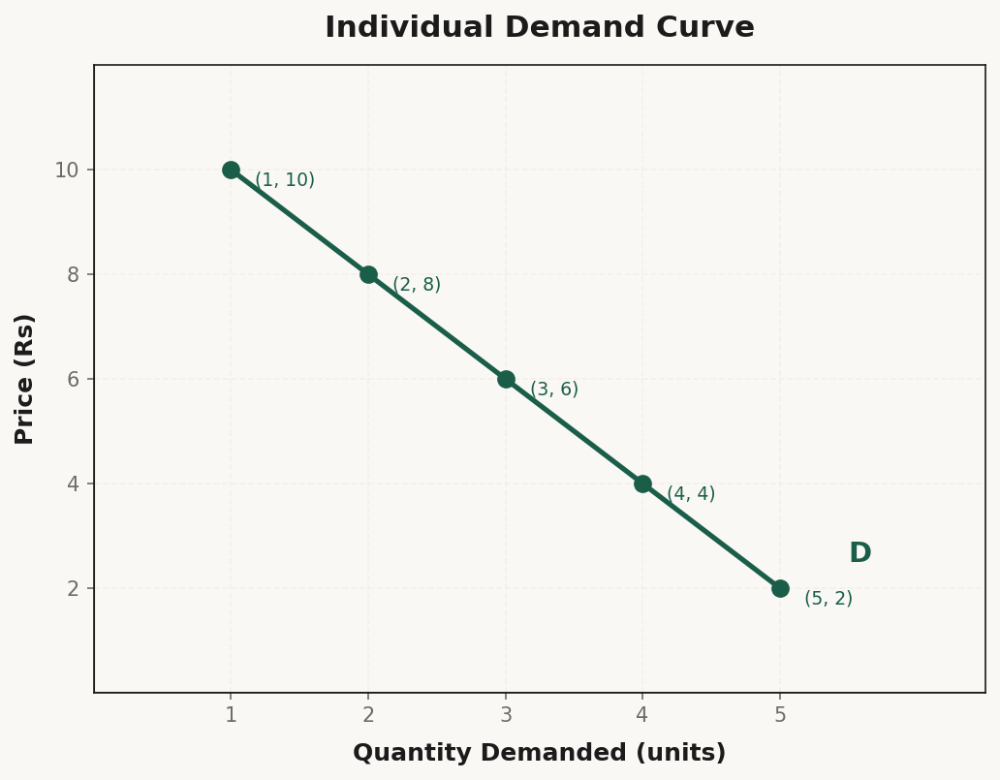
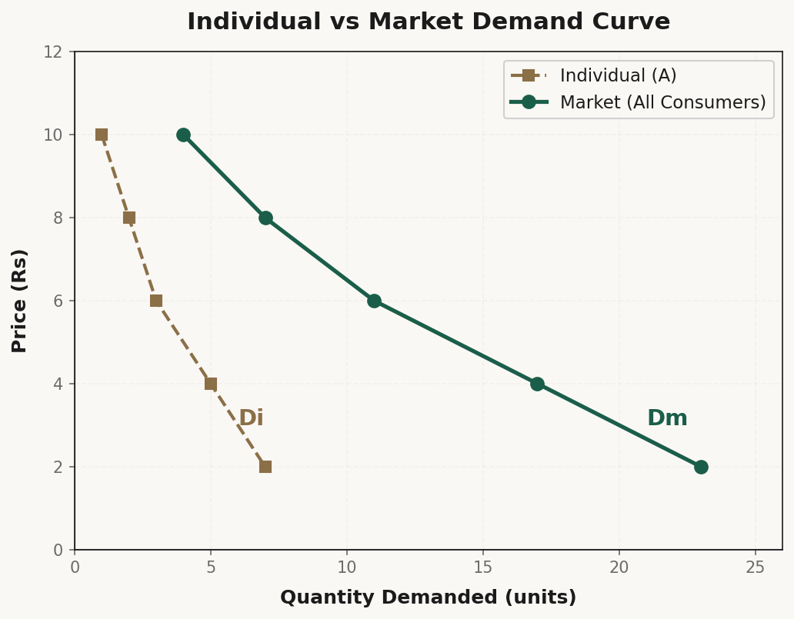
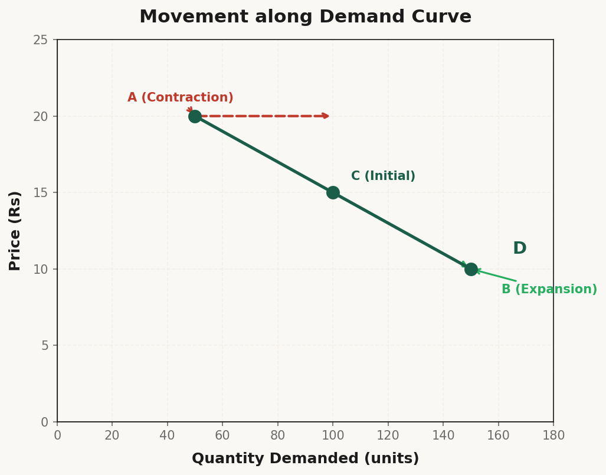
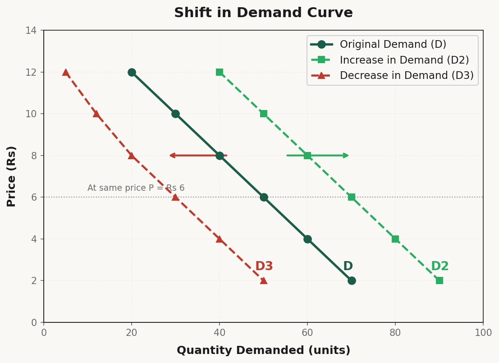

Demand
Understanding the meaning of demand, the Law of Demand, factors affecting demand, movements and shifts along the demand curve, and exceptions.
1. Meaning of Demand
What is Demand?
Demand refers to the quantity of a commodity that a consumer is willing and able to buy at a given price during a given period of time.
Desire vs Want vs Demand
Many students confuse these three terms. Let's understand the difference:
| Term | Meaning | Example |
|---|---|---|
| Desire (इच्छा) | Just a wish — no ability or willingness to pay | "I want a Ferrari" (but can't afford it) |
| Want (चाह) | Desire + ability to pay, but no willingness | "I can buy a ₹50,000 phone" (but don't need it) |
| Demand (मांग) | Desire + ability + willingness to pay | "I need a ₹5,000 phone and I'll buy it today" |
Three Essential Conditions for Demand:
For anything to be called Demand in Economics, ALL three conditions must be satisfied:
1. Desire – You want the good
2. Ability – You have enough money to buy it
3. Willingness – You are ready to spend money on it
Real Life Example (From Lecture):
"Bachpan se maa-baap se koi na koi demand chalti rehti hai. Mela gaya → teen pahiye wali cycle dilao, Kinder Joy dilao, jhula jhulao. Jis din mana kar diya — wahi fail gaye!"
Demand = Desire + Ability to Pay + Willingness to Pay
2. Types of Demand
Economics studies demand at two levels:
| Type | Definition | Who? |
|---|---|---|
| Individual Demand | Quantity demanded by ONE consumer | A single person |
| Market Demand | Total quantity demanded by ALL consumers | Everyone in the market |
Example:
| Price | Individual A | Individual B | Individual C | Market Demand |
|---|---|---|---|---|
| 10 | 5 | 3 | 2 | 10 |
| 8 | 7 | 5 | 4 | 16 |
| 6 | 10 | 7 | 6 | 23 |
Market Demand = Sum of all Individual Demands
Real Life (From Lecture):
"Rohit Sir (accounts wale) — woh doodh wale hain, milkman hain. Ek ghar mein 2 litre, doosre mein 3, teesre mein 5 — har ghar ki individual demand alag. Pura mohalla collect karo — woh market demand hai."
3. Demand Function
Definition:
Demand Function shows the relationship between demand for a commodity and the factors affecting it.
Individual Demand Function:
Dx = f(Px, Pr, Y, T, E)
| Factor | Symbol | Meaning |
|---|---|---|
| Price of the commodity | Px | Price of Good X itself |
| Price of related goods | Pr | Price of Substitutes & Complements |
| Income of consumer | Y | Consumer's income level |
| Taste & preferences | T | Liking, fashion, habits |
| Future expectations | E | Expected future prices/income |
4. Factors Affecting Individual Demand
Factor 1: Price of the Commodity (Px)
Law of Demand: Price ↑ → Demand ↓ and Price ↓ → Demand ↑ (Inverse relationship)
Factor 2: Price of Related Goods (Pr)
Two types of related goods:
a) Substitute Goods (विकल्प वस्तुएँ)
Goods that can be used in place of each other.
| Example | If Tea Price ↑ | Effect on Coffee Demand |
|---|---|---|
| Tea ↔ Coffee | Tea becomes costly | People shift to Coffee → Coffee Demand ↑ |
| Pepsi ↔ Coke | Pepsi becomes costly | People buy Coke → Coke Demand ↑ |
Direct relationship: Price of Substitute ↑ → Demand for the good ↑
b) Complementary Goods (पूरक वस्तुएँ)
Goods that are used together.
| Example | If Car Price ↑ | Effect on Petrol Demand |
|---|---|---|
| Car ↔ Petrol | Car becomes costly | Fewer cars bought → Petrol Demand ↓ |
| Printer ↔ Ink | Printer costly | Fewer printers → Ink Demand ↓ |
Inverse relationship: Price of Complement ↑ → Demand for the good ↓
Factor 3: Income of Consumer (Y)
| Type of Good | Income ↑ | Income ↓ |
|---|---|---|
| Normal Goods (most goods) | Demand ↑ | Demand ↓ |
| Inferior Goods (cheap alternatives) | Demand ↓ | Demand ↑ |
Factor 4: Taste & Preferences (T)
Fashion, seasons, habits, advertisements all affect demand.
| Factor | Example |
|---|---|
| Fashion | Bell-bottom jeans went out of fashion → Demand ↓ |
| Season | Winter → Woolen clothes Demand ↑ |
| Advertisements | Good ad → More people want the product |
| Habits | Tea drinkers will always prefer tea |
Factor 5: Future Expectations (E)
| Expectation | Effect on Demand Now |
|---|---|
| Price will ↑ in future | Demand ↑ NOW (buy before price rise) |
| Price will ↓ in future | Demand ↓ NOW (wait for lower price) |
| Income will ↑ in future | Demand ↑ NOW (confident spending) |
| Shortage expected | Demand ↑ NOW (panic buying) |
Market Demand Function:
Dm = f(Px, Pr, Y, T, E, N, D)
Additional factors: N (Number of consumers) and D (Distribution of income)
5. Law of Demand
Definition:
Law of Demand states that — other factors remaining constant — there is an inverse relationship between the price of a commodity and its quantity demanded.
In Simple Words:
Price ↑ → Quantity Demanded ↓ Price ↓ → Quantity Demanded ↑
Assumptions of Law of Demand:
This law works only when other things remain the same (ceteris paribus):
- No change in consumer's income
- No change in price of related goods (substitutes & complements)
- No change in taste/preferences
- No change in future expectations
- No change in number of consumers (for market demand)
Reasons for Law of Demand (Why does demand curve slope downward?)
| Reason | Explanation |
|---|---|
| 1. Law of Diminishing MU | As we buy more, MU ↓ → we only buy more if price ↓ |
| 2. Income Effect | Price ↓ → Real income ↑ → Can buy more |
| 3. Substitution Effect | Price ↓ → Good becomes cheaper relative to substitutes → People switch |
| 4. New Consumers | Price ↓ → More people can now afford the good |
6. Demand Schedule
Individual Demand Schedule:
A table showing the quantity demanded by one consumer at different prices.
| Price (₹) | Quantity Demanded (units) |
|---|---|
| 10 | 1 |
| 8 | 2 |
| 6 | 3 |
| 4 | 4 |
| 2 | 5 |
As price falls → quantity demanded rises (Inverse relationship)
Market Demand Schedule:
A table showing the total quantity demanded by all consumers at different prices.
| Price (₹) | Individual A | Individual B | Individual C | Market Demand |
|---|---|---|---|---|
| 10 | 1 | 2 | 1 | 4 |
| 8 | 2 | 3 | 2 | 7 |
| 6 | 3 | 5 | 3 | 11 |
| 4 | 5 | 7 | 5 | 17 |
| 2 | 7 | 9 | 7 | 23 |
7. Demand Curve
Definition:
Demand Curve is the graphical representation of the demand schedule.
Individual Demand Curve:

- X-axis: Quantity Demanded
- Y-axis: Price
- Shape: Downward sloping from left to right
Market Demand Curve:

Market demand curve is flatter than individual demand curve (more elastic) because it represents the sum of all individual demands.
Why is Demand Curve Downward Sloping?
- Law of DMU — Marginal utility ↓ as consumption ↑
- Income effect — Price ↓ = Real income ↑
- Substitution effect — Good becomes cheaper relative to substitutes
- New buyers enter — Lower price attracts more consumers
8. Movement along Demand Curve
Meaning:
Movement along the same demand curve happens when quantity demanded changes due to change in PRICE only — all other factors remain constant.
There are two types of movement:
A) Expansion (Extension) of Demand
Expansion of Demand = Rise in quantity demanded due to fall in price.
| Situation | Before | After | Change |
|---|---|---|---|
| Price | ₹20 | ₹15 | ↓ |
| Quantity | 100 | 150 | ↑ (Expansion) |
Also called: Extension of Demand, Increase in Quantity Demanded, Downward Movement along the Same Demand Curve
B) Contraction of Demand
Contraction of Demand = Fall in quantity demanded due to rise in price.
| Situation | Before | After | Change |
|---|---|---|---|
| Price | ₹15 | ₹20 | ↑ |
| Quantity | 150 | 100 | ↓ (Contraction) |
Movement along Demand Curve:

Summary:
| Movement | Cause | Effect | Direction on Curve |
|---|---|---|---|
| Expansion | Price ↓ | Quantity ↑ | Downward movement |
| Contraction | Price ↑ | Quantity ↓ | Upward movement |
9. Shift in Demand Curve
Meaning:
Shift in Demand Curve happens when quantity demanded changes due to factors OTHER THAN price (income, taste, related goods price, etc.)
There are two types of shift:
A) Increase in Demand
Increase in Demand = Demand rises at the same price due to change in other factors.
| Situation | Before | After | Change |
|---|---|---|---|
| Price (constant) | ₹10 | ₹10 | Same |
| Quantity Demanded | 100 | 150 | ↑ |
| Demand Curve | D₁ | D₂ | Rightward Shift |
Causes of Increase in Demand (Rightward Shift):
- Income ↑ (for normal goods)
- Price of substitute ↑
- Price of complement ↓
- Taste shifts in favor
- Future price expected to ↑
- Population ↑ (for market demand)
B) Decrease in Demand
Decrease in Demand = Demand falls at the same price due to change in other factors.
| Situation | Before | After | Change |
|---|---|---|---|
| Price (constant) | ₹10 | ₹10 | Same |
| Quantity Demanded | 100 | 50 | ↓ |
| Demand Curve | D₁ | D₃ | Leftward Shift |
Causes of Decrease in Demand (Leftward Shift):
- Income ↓ (for normal goods)
- Price of substitute ↓
- Price of complement ↑
- Taste shifts away (out of fashion)
- Future price expected to ↓
- Population ↓ (for market demand)
Shift in Demand Curve — Diagram:

Real Life Understanding (From Lecture):
"Bhaiya, jab sirf PRICE badalta hai — toh hum same curve pe upar-neeche ghoomte hain. Lekin jab TASTE badal gayi, INCOME badal gayi, ya SUBSTITUTE ka price badal gaya — tab toh poori curve hi shift ho jati hai!"
10. Exceptions to Law of Demand
Meaning:
Exceptions are situations where the Law of Demand fails — price goes up but demand does NOT go down, or price goes down but demand does NOT go up.
Exception 1: Giffen Goods
Named after Sir Robert Giffen. These are special inferior goods whose demand increases when price rises.
Characteristics of Giffen Goods:
- They are staple foods (basic necessities)
- They are inferior goods (cheap)
- They have no close substitutes
- Example: Bread, Potatoes, Rice (for poor families)
How it works (The Giffen Paradox):
"Agar andaaz ka price ₹5 se ₹7 ho gaya — gareeb aadmi ab mehenga andaaz nahi le sakta, toh use aur zyada andaaz khareedna padega kyunki woh meat/vegetables nahi le sakta!"
| Effect | Normal Good | Giffen Good |
|---|---|---|
| Price ↑ | Demand ↓ | Demand ↑ |
| Price ↓ | Demand ↑ | Demand ↓ |
Exception 2: Veblen / Status Goods (Conspicuous Consumption)
Named after Thorstein Veblen. These are luxury/status goods whose demand increases with price because high price = high status.
Examples: Designer clothes (Gucci, Louis Vuitton), Luxury cars (Rolls Royce, Ferrari), Diamonds, jewelry, Premium gadgets (iPhone)
"Aurat logon se nahi lad sakte! Unka jo favorite top hai, woh ₹100 ka bhi ho ya ₹10,000 ka — unhe chahiye! Fashion related goods mein price high = more demand!"
| Good | Price ₹500 | Price ₹50,000 |
|---|---|---|
| Normal shirt | Would buy more | Would buy less |
| Designer shirt | "Cheap — not interested" | "Wow — exclusive! Must buy!" |
Exception 3: Basic Necessities
Goods that are essential for survival — people buy them regardless of price.
Examples: Food grains, salt, sugar, milk, medicines
"Daal-roti koi nahi chhodta! Chahe kitna bhi mehnga ho jaye — insaan ko khana toh khana hai!"
Exception 4: Emergency / Shortage / Panic
During emergencies, people buy more even at higher prices.
Examples: During floods → People buy food/water at any price; During war → Panic buying; During shortage → Hoarding
"Jab shortage hoti hai — insaan ₹100 ki roti bhi kharid leta hai!"
Exception 5: Future Price Expectations
If people expect prices to rise further — they buy more NOW even at high prices.
"Gold ka price badh raha hai? Aur kharido! Kal aur mehnga hoga!"
Exception 6: Ignorance / Habit
Sometimes consumers are unaware of price changes or have brand loyalty.
"Ek aadmi roz Subway ka sandwich khaata hai. Price badh gaya — woh phir bhi khaega. Aadat hai!"
Summary of Exceptions:
| Exception | What Happens? | Example |
|---|---|---|
| Giffen Goods | Price ↑ → Demand ↑ | Cheap staple food (potatoes) |
| Veblen/Status Goods | Price ↑ → Demand ↑ | Luxury cars, designer clothes |
| Basic Necessities | Price ↑ → Demand same | Salt, medicines |
| Emergency | Price ↑ → Demand ↑ | Food during floods |
| Future Expectations | Price ↑ → Demand ↑ NOW | Expected further price rise |
| Habit/Addiction | Price ↑ → Demand same | Cigarettes, brand loyalty |
11. Summary: Movement vs Shift Comparison
| Aspect | Movement Along Curve | Shift of Curve |
|---|---|---|
| Cause | Change in own price | Change in other factors |
| Effect on Demand | Quantity demanded changes | Whole demand changes |
| Graph | Point moves on same curve | Curve moves to new position |
| Types | Expansion & Contraction | Increase & Decrease |
| Direction | Upward or downward | Rightward or leftward |
| Other factors | Constant | Change |
12. Types of Demand — Complete Flowchart
(1 consumer)"] A --> C["MARKET DEMAND
(All consumers)"] B --> D["Dx = f(Px, Pr, Y, T, E)"] C --> E["Dm = f(Px, Pr, Y, T, E, N, D)"] D --> F["Affected by:
• Own Price
• Related Goods Price
• Income
• Taste/Preferences
• Future Expectations"] E --> G["Also affected by:
• Number of consumers
• Income distribution"] B --> H["LAW OF DEMAND
P ↑ → D ↓
P ↓ → D ↑"] C --> H H --> I["MOVEMENT ALONG
(Price change)"] H --> J["SHIFT OF CURVE
(Other factors)"] I --> K["EXPANSION
(P↓ → D↑)"] I --> L["CONTRACTION
(P↑ → D↓)"] J --> M["INCREASE
(Rightward)"] J --> N["DECREASE
(Leftward)"] style A fill:#1a5e4a,color:#fff,stroke:#1a5e4a,stroke-width:2px style H fill:#1a5e4a,color:#fff,stroke:#1a5e4a,stroke-width:2px style B fill:#e8f0ec,stroke:#1a5e4a,stroke-width:1px style C fill:#e8f0ec,stroke:#1a5e4a,stroke-width:1px style D fill:#f0ede8,stroke:#6b6b6b,stroke-width:1px style E fill:#f0ede8,stroke:#6b6b6b,stroke-width:1px style F fill:#f0ede8,stroke:#6b6b6b,stroke-width:1px style G fill:#f0ede8,stroke:#6b6b6b,stroke-width:1px style I fill:#fff8e5,stroke:#d4a12a,stroke-width:1px style J fill:#fff8e5,stroke:#d4a12a,stroke-width:1px style K fill:#27ae60,color:#fff,stroke:#1a5e4a,stroke-width:1px style L fill:#c0392b,color:#fff,stroke:#1a5e4a,stroke-width:1px style M fill:#27ae60,color:#fff,stroke:#1a5e4a,stroke-width:1px style N fill:#c0392b,color:#fff,stroke:#1a5e4a,stroke-width:1px
Important Exam Questions
Short Questions (2-3 Marks):
- Define Demand. State the three conditions essential for demand.
- Distinguish between Desire and Demand. Give an example.
- State the Law of Demand. What are its assumptions?
- What is a Demand Schedule? Distinguish between Individual and Market Demand Schedule.
- What is Demand Function? Explain any two factors affecting demand.
- Distinguish between Movement along and Shift of Demand Curve.
- What is Expansion of Demand? What causes it?
- Define Giffen Goods. Give an example.
- What is meant by Substitute Goods? Give an example.
- Distinguish between Normal Goods and Inferior Goods.
Long Questions (4-6 Marks):
- Explain the Law of Demand with the help of a demand schedule and demand curve. Discuss its assumptions and reasons.
- Explain the factors affecting demand for a commodity (Demand Function) in detail.
- Distinguish between Movement along Demand Curve and Shift in Demand Curve with the help of diagrams.
- Explain the Expansion and Contraction of Demand with the help of a diagram.
- What are the exceptions to the Law of Demand? Explain any four in detail.
- Distinguish between Individual Demand and Market Demand. How is market demand curve derived?
- Explain the effect of change in price of related goods on demand for a commodity. Give examples.
- Explain how Increase in Demand is different from Expansion of Demand with diagrams.
Numericals and Diagrams:
-
Draw a Market Demand Schedule from the following individual demand schedules:
Price Individual X Individual Y Individual Z 5 10 8 6 4 12 10 8 3 15 12 10 2 18 15 12 1 20 18 14 Calculate Market Demand at each price level.
-
Graph Questions:
- Draw an Individual Demand Curve for the given schedule
- Show Expansion when price falls from ₹10 to ₹6
- Show Contraction when price rises from ₹6 to ₹12
- A consumer's demand for tea is 10 cups at ₹5 per cup. If the price of coffee (substitute) rises from ₹8 to ₹12, what will happen to the demand for tea? Show with a diagram.
1. Individual Demand Curve (downward sloping)
2. Market Demand Curve (flatter, sum of individuals)
3. Expansion & Contraction (movement along same curve)
4. Increase & Decrease (shift of entire curve)
Remember: Movement = Price change. Shift = Other factor change. Never confuse these two!